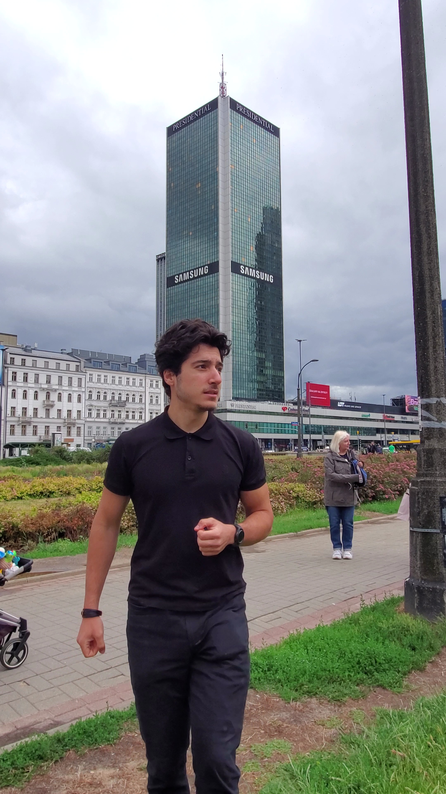

The Founder
Toufic Abou Ali
Lebanese founder-athlete. Founder & CEO of Sira. Six Continents world-record attempt.
Lebanese founder-athlete. Founder & CEO of Sira. Six Continents world-record attempt.

Toufic Abou Ali is 20 years old, Lebanese, and driven by two parallel ambitions: building Sira into a career platform that serves a 60,000-person community, and completing six full IRONMAN races across six continents in a world-record attempt.
Both require the same thing: discipline, systems, resilience, and the willingness to operate at a level most people consider unreasonable.
Toufic carries Lebanon into every race. The Lebanese flag is not a costume — it is a visual cue that says where this mission comes from and what it represents.
Lebanon has produced engineers, doctors, entrepreneurs, and artists who have shaped the world. This mission adds a new chapter: a Lebanese founder-athlete attempting a world record that has never been attempted from this country.

Sira is a career platform founded by Toufic. It serves a community of over 60,000 people and operates with a team of 25+. The same operational discipline that runs a company is the discipline that trains for six IRONMAN races.
Toufic is not a professional athlete with a sponsorship machine behind him. He is a founder who saw a gap in his own athletic preparation after IRONMAN 70.3 Warsaw, and built Six Continents as the professional response.
Six Continents is not an impulsive challenge. It is a structured campaign built around preparation, accountability, documentation, and honest reporting.
Toufic studies abroad, manages a team, trains consistently, and carries the responsibility of representing Lebanon on a global stage. The mission is built on systems that make this possible.